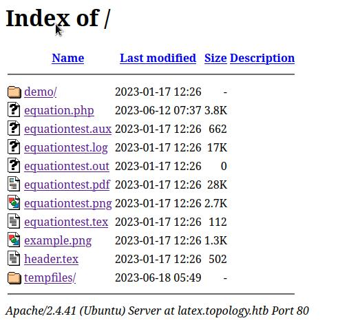

Topology#
Enum#
nmap -Pn -sC -sV 10.10.11.217 -oN scans/nmap.initial
Starting Nmap 7.93 ( https://nmap.org ) at 2023-06-18 10:26 IST
Nmap scan report for 10.10.11.217
Host is up (0.035s latency).
Not shown: 998 closed tcp ports (conn-refused)
PORT STATE SERVICE VERSION
22/tcp open ssh OpenSSH 8.2p1 Ubuntu 4ubuntu0.7 (Ubuntu Linux; protocol 2.0)
| ssh-hostkey:
| 3072 dcbc3286e8e8457810bc2b5dbf0f55c6 (RSA)
| 256 d9f339692c6c27f1a92d506ca79f1c33 (ECDSA)
|_ 256 4ca65075d0934f9c4a1b890a7a2708d7 (ED25519)
80/tcp open http Apache httpd 2.4.41 ((Ubuntu))
|_http-server-header: Apache/2.4.41 (Ubuntu)
|_http-title: Miskatonic University | Topology Group
Service Info: OS: Linux; CPE: cpe:/o:linux:linux_kernel
Service detection performed. Please report any incorrect results at https://nmap.org/submit/ .
Nmap done: 1 IP address (1 host up) scanned in 8.06 seconds
curl -I http://10.10.11.217
HTTP/1.1 200 OK
Date: Sun, 18 Jun 2023 09:27:07 GMT
Server: Apache/2.4.41 (Ubuntu)
Last-Modified: Tue, 17 Jan 2023 17:26:29 GMT
ETag: "1a6f-5f27900124a8b"
Accept-Ranges: bytes
Content-Length: 6767
Vary: Accept-Encoding
Content-Type: text/html
Looking at the source we can find http://latex.topology.htb/equation.php, adding topology.htb and latex.topology.htb to the hosts file. The root of the subdomain gives us the full directory listing, of where equation.php lives. equation.php is basically a single page webapp where a text field input is taken for a LaTeX oneliner, which is submited over a GET, the app then generates a png based on that LaTeX expression. In the root of the subdomain we can also see a bunch of other files:

Running exiftool on the pdf give the exact version of pdfTeX this was generated with
exiftool equationtest.pdf
ExifTool Version Number : 12.57
File Name : equationtest.pdf
Directory : .
File Size : 29 kB
File Modification Date/Time : 2023:06:18 10:45:05+01:00
File Access Date/Time : 2023:06:18 10:45:18+01:00
File Inode Change Date/Time : 2023:06:18 10:45:05+01:00
File Permissions : -rw-r--r--
File Type : PDF
File Type Extension : pdf
MIME Type : application/pdf
PDF Version : 1.5
Linearized : No
Page Count : 1
Page Mode : UseOutlines
Producer : pdfTeX-1.40.20
Author :
Title :
Subject :
Creator : LaTeX with hyperref
Create Date : 2022:03:12 08:48:18-05:00
Modify Date : 2022:03:12 08:48:18-05:00
Trapped : False
PTEX Fullbanner : This is pdfTeX, Version 3.14159265-2.6-1.40.20 (TeX Live 2019/Debian) kpathsea version 6.3.1
The log file also seems to provide info on all the modules, packages, or whatever term is the correct one in latex, that are loaded by pdftex
cat equationtest.log
This is pdfTeX, Version 3.14159265-2.6-1.40.20 (TeX Live 2019/Debian) (preloaded format=pdflatex 2022.2.15) 12 MAR 2022 08:48
entering extended mode
restricted \write18 enabled.
%&-line parsing enabled.
**equationtest.tex
(./equationtest.tex
LaTeX2e <2020-02-02> patch level 2
L3 programming layer <2020-02-14>
(/usr/share/texlive/texmf-dist/tex/latex/standalone/standalone.cls
Document Class: standalone 2018/03/26 v1.3a Class to compile TeX sub-files stan
dalone
(/usr/share/texlive/texmf-dist/tex/latex/tools/shellesc.sty
Package: shellesc 2019/11/08 v1.0c unified shell escape interface for LaTeX
Package shellesc Info: Restricted shell escape enabled on input line 77.
)
(/usr/share/texlive/texmf-dist/tex/generic/iftex/ifluatex.sty
Package: ifluatex 2019/10/25 v1.5 ifluatex legacy package. Use iftex instead.
(/usr/share/texlive/texmf-dist/tex/generic/iftex/iftex.sty
Package: iftex 2019/11/07 v1.0c TeX engine tests
))
(/usr/share/texlive/texmf-dist/tex/latex/xkeyval/xkeyval.sty
Package: xkeyval 2014/12/03 v2.7a package option processing (HA)
(/usr/share/texlive/texmf-dist/tex/generic/xkeyval/xkeyval.tex
(/usr/share/texlive/texmf-dist/tex/generic/xkeyval/xkvutils.tex
\XKV@toks=\toks14
\XKV@tempa@toks=\toks15
(/usr/share/texlive/texmf-dist/tex/generic/xkeyval/keyval.tex))
\XKV@depth=\count167
File: xkeyval.tex 2014/12/03 v2.7a key=value parser (HA)
))
\sa@internal=\count168
\c@sapage=\count169
(/usr/share/texlive/texmf-dist/tex/latex/standalone/standalone.cfg
File: standalone.cfg 2018/03/26 v1.3a Default configuration file for 'standalon
e' class
)
(/usr/share/texlive/texmf-dist/tex/latex/base/article.cls
Document Class: article 2019/12/20 v1.4l Standard LaTeX document class
(/usr/share/texlive/texmf-dist/tex/latex/base/size10.clo
File: size10.clo 2019/12/20 v1.4l Standard LaTeX file (size option)
)
\c@part=\count170
\c@section=\count171
\c@subsection=\count172
\c@subsubsection=\count173
\c@paragraph=\count174
\c@subparagraph=\count175
\c@figure=\count176
\c@table=\count177
\abovecaptionskip=\skip47
\belowcaptionskip=\skip48
\bibindent=\dimen134
)
\sa@box=\box45
) (./header.tex
(/usr/share/texlive/texmf-dist/tex/latex/base/inputenc.sty
Package: inputenc 2018/08/11 v1.3c Input encoding file
\inpenc@prehook=\toks16
\inpenc@posthook=\toks17
)
(/usr/share/texlive/texmf-dist/tex/latex/listings/listings.sty
\lst@mode=\count178
\lst@gtempboxa=\box46
\lst@token=\toks18
\lst@length=\count179
\lst@currlwidth=\dimen135
\lst@column=\count180
\lst@pos=\count181
\lst@lostspace=\dimen136
\lst@width=\dimen137
\lst@newlines=\count182
\lst@lineno=\count183
\lst@maxwidth=\dimen138
(/usr/share/texlive/texmf-dist/tex/latex/listings/lstmisc.sty
File: lstmisc.sty 2019/09/10 1.8c (Carsten Heinz)
\c@lstnumber=\count184
\lst@skipnumbers=\count185
\lst@framebox=\box47
)
(/usr/share/texlive/texmf-dist/tex/latex/listings/listings.cfg
File: listings.cfg 2019/09/10 1.8c listings configuration
))
Package: listings 2019/09/10 1.8c (Carsten Heinz)
(/usr/share/texlive/texmf-dist/tex/latex/graphics/graphicx.sty
Package: graphicx 2019/11/30 v1.2a Enhanced LaTeX Graphics (DPC,SPQR)
(/usr/share/texlive/texmf-dist/tex/latex/graphics/graphics.sty
Package: graphics 2019/11/30 v1.4a Standard LaTeX Graphics (DPC,SPQR)
(/usr/share/texlive/texmf-dist/tex/latex/graphics/trig.sty
Package: trig 2016/01/03 v1.10 sin cos tan (DPC)
)
(/usr/share/texlive/texmf-dist/tex/latex/graphics-cfg/graphics.cfg
File: graphics.cfg 2016/06/04 v1.11 sample graphics configuration
)
Package graphics Info: Driver file: pdftex.def on input line 105.
(/usr/share/texlive/texmf-dist/tex/latex/graphics-def/pdftex.def
File: pdftex.def 2018/01/08 v1.0l Graphics/color driver for pdftex
))
\Gin@req@height=\dimen139
\Gin@req@width=\dimen140
)
(/usr/share/texlive/texmf-dist/tex/latex/eurosym/eurosym.sty
Package: eurosym 1998/08/06 v1.1 European currency symbol ``Euro''
\@eurobox=\box48
)
(/usr/share/texlive/texmf-dist/tex/latex/psnfss/times.sty
Package: times 2005/04/12 PSNFSS-v9.2a (SPQR)
)
(/usr/share/texlive/texmf-dist/tex/latex/hyperref/hyperref.sty
Package: hyperref 2020/01/14 v7.00d Hypertext links for LaTeX
(/usr/share/texlive/texmf-dist/tex/generic/ltxcmds/ltxcmds.sty
Package: ltxcmds 2019/12/15 v1.24 LaTeX kernel commands for general use (HO)
)
(/usr/share/texlive/texmf-dist/tex/latex/pdftexcmds/pdftexcmds.sty
Package: pdftexcmds 2019/11/24 v0.31 Utility functions of pdfTeX for LuaTeX (HO
)
(/usr/share/texlive/texmf-dist/tex/generic/infwarerr/infwarerr.sty
Package: infwarerr 2019/12/03 v1.5 Providing info/warning/error messages (HO)
)
Package pdftexcmds Info: \pdf@primitive is available.
Package pdftexcmds Info: \pdf@ifprimitive is available.
Package pdftexcmds Info: \pdfdraftmode found.
)
(/usr/share/texlive/texmf-dist/tex/generic/kvsetkeys/kvsetkeys.sty
Package: kvsetkeys 2019/12/15 v1.18 Key value parser (HO)
)
(/usr/share/texlive/texmf-dist/tex/generic/kvdefinekeys/kvdefinekeys.sty
Package: kvdefinekeys 2019-12-19 v1.6 Define keys (HO)
)
(/usr/share/texlive/texmf-dist/tex/generic/pdfescape/pdfescape.sty
Package: pdfescape 2019/12/09 v1.15 Implements pdfTeX's escape features (HO)
)
(/usr/share/texlive/texmf-dist/tex/latex/hycolor/hycolor.sty
Package: hycolor 2020-01-27 v1.10 Color options for hyperref/bookmark (HO)
)
(/usr/share/texlive/texmf-dist/tex/latex/letltxmacro/letltxmacro.sty
Package: letltxmacro 2019/12/03 v1.6 Let assignment for LaTeX macros (HO)
)
(/usr/share/texlive/texmf-dist/tex/latex/auxhook/auxhook.sty
Package: auxhook 2019-12-17 v1.6 Hooks for auxiliary files (HO)
)
(/usr/share/texlive/texmf-dist/tex/latex/kvoptions/kvoptions.sty
Package: kvoptions 2019/11/29 v3.13 Key value format for package options (HO)
)
\@linkdim=\dimen141
\Hy@linkcounter=\count186
\Hy@pagecounter=\count187
(/usr/share/texlive/texmf-dist/tex/latex/hyperref/pd1enc.def
File: pd1enc.def 2020/01/14 v7.00d Hyperref: PDFDocEncoding definition (HO)
Now handling font encoding PD1 ...
... no UTF-8 mapping file for font encoding PD1
)
(/usr/share/texlive/texmf-dist/tex/generic/intcalc/intcalc.sty
Package: intcalc 2019/12/15 v1.3 Expandable calculations with integers (HO)
)
(/usr/share/texlive/texmf-dist/tex/generic/etexcmds/etexcmds.sty
Package: etexcmds 2019/12/15 v1.7 Avoid name clashes with e-TeX commands (HO)
)
\Hy@SavedSpaceFactor=\count188
\pdfmajorversion=\count189
Package hyperref Info: Hyper figures OFF on input line 4547.
Package hyperref Info: Link nesting OFF on input line 4552.
Package hyperref Info: Hyper index ON on input line 4555.
Package hyperref Info: Plain pages OFF on input line 4562.
Package hyperref Info: Backreferencing OFF on input line 4567.
Package hyperref Info: Implicit mode ON; LaTeX internals redefined.
Package hyperref Info: Bookmarks ON on input line 4800.
\c@Hy@tempcnt=\count190
(/usr/share/texlive/texmf-dist/tex/latex/url/url.sty
\Urlmuskip=\muskip16
Package: url 2013/09/16 ver 3.4 Verb mode for urls, etc.
)
LaTeX Info: Redefining \url on input line 5159.
\XeTeXLinkMargin=\dimen142
(/usr/share/texlive/texmf-dist/tex/generic/bitset/bitset.sty
Package: bitset 2019/12/09 v1.3 Handle bit-vector datatype (HO)
(/usr/share/texlive/texmf-dist/tex/generic/bigintcalc/bigintcalc.sty
Package: bigintcalc 2019/12/15 v1.5 Expandable calculations on big integers (HO
)
))
\Fld@menulength=\count191
\Field@Width=\dimen143
\Fld@charsize=\dimen144
Package hyperref Info: Hyper figures OFF on input line 6430.
Package hyperref Info: Link nesting OFF on input line 6435.
Package hyperref Info: Hyper index ON on input line 6438.
Package hyperref Info: backreferencing OFF on input line 6445.
Package hyperref Info: Link coloring OFF on input line 6450.
Package hyperref Info: Link coloring with OCG OFF on input line 6455.
Package hyperref Info: PDF/A mode OFF on input line 6460.
LaTeX Info: Redefining \ref on input line 6500.
LaTeX Info: Redefining \pageref on input line 6504.
(/usr/share/texlive/texmf-dist/tex/generic/atbegshi/atbegshi.sty
Package: atbegshi 2019/12/05 v1.19 At begin shipout hook (HO)
)
\Hy@abspage=\count192
\c@Item=\count193
\c@Hfootnote=\count194
)
Package hyperref Info: Driver (autodetected): hpdftex.
(/usr/share/texlive/texmf-dist/tex/latex/hyperref/hpdftex.def
File: hpdftex.def 2020/01/14 v7.00d Hyperref driver for pdfTeX
(/usr/share/texlive/texmf-dist/tex/latex/atveryend/atveryend.sty
Package: atveryend 2019-12-11 v1.11 Hooks at the very end of document (HO)
)
\Fld@listcount=\count195
\c@bookmark@seq@number=\count196
(/usr/share/texlive/texmf-dist/tex/latex/rerunfilecheck/rerunfilecheck.sty
Package: rerunfilecheck 2019/12/05 v1.9 Rerun checks for auxiliary files (HO)
(/usr/share/texlive/texmf-dist/tex/generic/uniquecounter/uniquecounter.sty
Package: uniquecounter 2019/12/15 v1.4 Provide unlimited unique counter (HO)
)
Package uniquecounter Info: New unique counter `rerunfilecheck' on input line 2
86.
)
\Hy@SectionHShift=\skip49
))
(/usr/share/texlive/texmf-dist/tex/latex/psnfss/mathptmx.sty
Package: mathptmx 2005/04/12 PSNFSS-v9.2a Times w/ Math, improved (SPQR, WaS)
LaTeX Font Info: Redeclaring symbol font `operators' on input line 28.
LaTeX Font Info: Overwriting symbol font `operators' in version `normal'
(Font) OT1/cmr/m/n --> OT1/ztmcm/m/n on input line 28.
LaTeX Font Info: Overwriting symbol font `operators' in version `bold'
(Font) OT1/cmr/bx/n --> OT1/ztmcm/m/n on input line 28.
LaTeX Font Info: Redeclaring symbol font `letters' on input line 29.
LaTeX Font Info: Overwriting symbol font `letters' in version `normal'
(Font) OML/cmm/m/it --> OML/ztmcm/m/it on input line 29.
LaTeX Font Info: Overwriting symbol font `letters' in version `bold'
(Font) OML/cmm/b/it --> OML/ztmcm/m/it on input line 29.
LaTeX Font Info: Redeclaring symbol font `symbols' on input line 30.
LaTeX Font Info: Overwriting symbol font `symbols' in version `normal'
(Font) OMS/cmsy/m/n --> OMS/ztmcm/m/n on input line 30.
LaTeX Font Info: Overwriting symbol font `symbols' in version `bold'
(Font) OMS/cmsy/b/n --> OMS/ztmcm/m/n on input line 30.
LaTeX Font Info: Redeclaring symbol font `largesymbols' on input line 31.
LaTeX Font Info: Overwriting symbol font `largesymbols' in version `normal'
(Font) OMX/cmex/m/n --> OMX/ztmcm/m/n on input line 31.
LaTeX Font Info: Overwriting symbol font `largesymbols' in version `bold'
(Font) OMX/cmex/m/n --> OMX/ztmcm/m/n on input line 31.
\symbold=\mathgroup4
\symitalic=\mathgroup5
LaTeX Font Info: Redeclaring math alphabet \mathbf on input line 34.
LaTeX Font Info: Overwriting math alphabet `\mathbf' in version `normal'
(Font) OT1/cmr/bx/n --> OT1/ptm/bx/n on input line 34.
LaTeX Font Info: Overwriting math alphabet `\mathbf' in version `bold'
(Font) OT1/cmr/bx/n --> OT1/ptm/bx/n on input line 34.
LaTeX Font Info: Redeclaring math alphabet \mathit on input line 35.
LaTeX Font Info: Overwriting math alphabet `\mathit' in version `normal'
(Font) OT1/cmr/m/it --> OT1/ptm/m/it on input line 35.
LaTeX Font Info: Overwriting math alphabet `\mathit' in version `bold'
(Font) OT1/cmr/bx/it --> OT1/ptm/m/it on input line 35.
LaTeX Info: Redefining \hbar on input line 50.
)
(/usr/share/texlive/texmf-dist/tex/latex/l3backend/l3backend-pdfmode.def
File: l3backend-pdfmode.def 2020-02-03 L3 backend support: PDF mode
\l__kernel_color_stack_int=\count197
\l__pdf_internal_box=\box49
)
No file equationtest.aux.
\openout1 = `equationtest.aux'.
LaTeX Font Info: Checking defaults for OML/cmm/m/it on input line 3.
LaTeX Font Info: ... okay on input line 3.
LaTeX Font Info: Checking defaults for OMS/cmsy/m/n on input line 3.
LaTeX Font Info: ... okay on input line 3.
LaTeX Font Info: Checking defaults for OT1/cmr/m/n on input line 3.
LaTeX Font Info: ... okay on input line 3.
LaTeX Font Info: Checking defaults for T1/cmr/m/n on input line 3.
LaTeX Font Info: ... okay on input line 3.
LaTeX Font Info: Checking defaults for TS1/cmr/m/n on input line 3.
LaTeX Font Info: ... okay on input line 3.
LaTeX Font Info: Checking defaults for OMX/cmex/m/n on input line 3.
LaTeX Font Info: ... okay on input line 3.
LaTeX Font Info: Checking defaults for U/cmr/m/n on input line 3.
LaTeX Font Info: ... okay on input line 3.
LaTeX Font Info: Checking defaults for PD1/pdf/m/n on input line 3.
LaTeX Font Info: ... okay on input line 3.
LaTeX Font Info: Trying to load font information for OT1+ptm on input line 3
.
(/usr/share/texlive/texmf-dist/tex/latex/psnfss/ot1ptm.fd
File: ot1ptm.fd 2001/06/04 font definitions for OT1/ptm.
)
\c@lstlisting=\count198
(/usr/share/texlive/texmf-dist/tex/context/base/mkii/supp-pdf.mkii
[Loading MPS to PDF converter (version 2006.09.02).]
\scratchcounter=\count199
\scratchdimen=\dimen145
\scratchbox=\box50
\nofMPsegments=\count266
\nofMParguments=\count267
\everyMPshowfont=\toks19
\MPscratchCnt=\count268
\MPscratchDim=\dimen146
\MPnumerator=\count269
\makeMPintoPDFobject=\count270
\everyMPtoPDFconversion=\toks20
) (/usr/share/texlive/texmf-dist/tex/latex/epstopdf-pkg/epstopdf-base.sty
Package: epstopdf-base 2020-01-24 v2.11 Base part for package epstopdf
Package epstopdf-base Info: Redefining graphics rule for `.eps' on input line 4
85.
(/usr/share/texlive/texmf-dist/tex/latex/latexconfig/epstopdf-sys.cfg
File: epstopdf-sys.cfg 2010/07/13 v1.3 Configuration of (r)epstopdf for TeX Liv
e
))
\AtBeginShipoutBox=\box51
Package hyperref Info: Link coloring OFF on input line 3.
(/usr/share/texlive/texmf-dist/tex/latex/hyperref/nameref.sty
Package: nameref 2019/09/16 v2.46 Cross-referencing by name of section
(/usr/share/texlive/texmf-dist/tex/latex/refcount/refcount.sty
Package: refcount 2019/12/15 v3.6 Data extraction from label references (HO)
)
(/usr/share/texlive/texmf-dist/tex/generic/gettitlestring/gettitlestring.sty
Package: gettitlestring 2019/12/15 v1.6 Cleanup title references (HO)
)
\c@section@level=\count271
)
LaTeX Info: Redefining \ref on input line 3.
LaTeX Info: Redefining \pageref on input line 3.
LaTeX Info: Redefining \nameref on input line 3.
\@outlinefile=\write3
\openout3 = `equationtest.out'.
\big@size=\dimen147
LaTeX Font Info: Trying to load font information for OT1+ztmcm on input line
5.
(/usr/share/texlive/texmf-dist/tex/latex/psnfss/ot1ztmcm.fd
File: ot1ztmcm.fd 2000/01/03 Fontinst v1.801 font definitions for OT1/ztmcm.
)
LaTeX Font Info: Trying to load font information for OML+ztmcm on input line
5.
(/usr/share/texlive/texmf-dist/tex/latex/psnfss/omlztmcm.fd
File: omlztmcm.fd 2000/01/03 Fontinst v1.801 font definitions for OML/ztmcm.
)
LaTeX Font Info: Trying to load font information for OMS+ztmcm on input line
5.
(/usr/share/texlive/texmf-dist/tex/latex/psnfss/omsztmcm.fd
File: omsztmcm.fd 2000/01/03 Fontinst v1.801 font definitions for OMS/ztmcm.
)
LaTeX Font Info: Trying to load font information for OMX+ztmcm on input line
5.
(/usr/share/texlive/texmf-dist/tex/latex/psnfss/omxztmcm.fd
File: omxztmcm.fd 2000/01/03 Fontinst v1.801 font definitions for OMX/ztmcm.
)
LaTeX Font Info: Font shape `OT1/ptm/bx/n' in size <10> not available
(Font) Font shape `OT1/ptm/b/n' tried instead on input line 5.
LaTeX Font Info: Font shape `OT1/ptm/bx/n' in size <7.4> not available
(Font) Font shape `OT1/ptm/b/n' tried instead on input line 5.
LaTeX Font Info: Font shape `OT1/ptm/bx/n' in size <6> not available
(Font) Font shape `OT1/ptm/b/n' tried instead on input line 5.
[1
{/var/lib/texmf/fonts/map/pdftex/updmap/pdftex.map}]
Package atveryend Info: Empty hook `BeforeClearDocument' on input line 7.
Package atveryend Info: Empty hook `AfterLastShipout' on input line 7.
(./equationtest.aux)
Package atveryend Info: Executing hook `AtVeryEndDocument' on input line 7.
Package atveryend Info: Executing hook `AtEndAfterFileList' on input line 7.
Package rerunfilecheck Warning: File `equationtest.out' has changed.
(rerunfilecheck) Rerun to get outlines right
(rerunfilecheck) or use package `bookmark'.
Package rerunfilecheck Info: Checksums for `equationtest.out':
(rerunfilecheck) Before: <no file>
(rerunfilecheck) After: D41D8CD98F00B204E9800998ECF8427E;0.
)
Here is how much of TeX's memory you used:
7163 strings out of 483183
110368 string characters out of 5966292
361824 words of memory out of 5000000
22046 multiletter control sequences out of 15000+600000
546306 words of font info for 52 fonts, out of 8000000 for 9000
14 hyphenation exceptions out of 8191
37i,4n,60p,254b,309s stack positions out of 5000i,500n,10000p,200000b,80000s
{/usr/share/texlive/texmf-dist/fonts/enc/dvips/base/8r.enc}</usr/share/texliv
e/texmf-dist/fonts/type1/public/amsfonts/cm/cmex10.pfb></usr/share/texlive/texm
f-dist/fonts/type1/public/amsfonts/cm/cmmi10.pfb></usr/share/texlive/texmf-dist
/fonts/type1/public/amsfonts/cm/cmr10.pfb></usr/share/texlive/texmf-dist/fonts/
type1/urw/times/utmri8a.pfb>
Output written on equationtest.pdf (1 page, 29166 bytes).
PDF statistics:
30 PDF objects out of 1000 (max. 8388607)
22 compressed objects within 1 object stream
2 named destinations out of 1000 (max. 500000)
1 words of extra memory for PDF output out of 10000 (max. 10000000)
Note:
AUX files are written when a .TEX file is typeset (formatted to an output document) by LaTeX. Since the generation of LaTeX documentation can take multiple passes before the document is complete (because of file and citation cross-referencing), the AUX file is used to store information between runs of the LaTeX compilation process.
On my machine the part of the config file in relation to the shell escape looks like this:
% Enable system commands via \write18{...}. When enabled fully (set to
% t), obviously insecure. When enabled partially (set to p), only the
% commands listed in shell_escape_commands are allowed. Although this
% is not fully secure either, it is much better, and so useful that we
% enable it for everything but bare tex.
shell_escape = p
% No spaces in this command list.
%
% The programs listed here are as safe as any we know: they either do
% not write any output files, respect openout_any, or have hard-coded
% restrictions similar to or higher than openout_any=p. They also have
% no features to invoke arbitrary other programs, and no known
% exploitable bugs. All to the best of our knowledge. They also have
% practical use for being called from TeX.
%
shell_escape_commands = \
bibtex,bibtex8,\
extractbb,\
gregorio,\
kpsewhich,\
makeindex,\
repstopdf,\
r-mpost,\
texosquery-jre8,\
vdaisley:$apr1$1ONUB/S2$58eeNVirnRDB5zAIbIxTY0
$apr1$1ONUB/S2$58eeNVirnRDB5zAIbIxTY0:calculus20